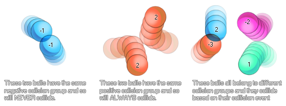

physics_fixture_set_collision_group(fixture, group)
| Argument | Description |
|---|---|
| fixture | the fixture that is to be bound |
| group | the group that this fixture is assigned to (either a positive value, 0, or a negative value) |
Returns: N/A
Once you have created your fixture you can define it as being part of a collision group. This means that you can tell instances with that fixture to always collide or never collide with other instance
that have fixtures bound to them with the same collision group. The values that can be assigned are based on positive or negative numbers, with 0 being the default value (meaning that the instance with this
fixture setting is ignored unless a collision event is created for it). Here is an image to help explain :

As you can see, setting collision groups can be very useful to create complex phyisical bodies that interact with the physical world around them, but not with each other. However, it should be noted that due to
the complexity of calculating collsions based on groups like this, it is recommened that you try to keep the number of groups in use in any one room to an absolute minimum.
physics_fixture_set_collision_group(fix_Wheel, -1);
The code above will set the fixture indexed in the variable "fix_Wheel" to be part of the group "-1".